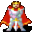

Krell¶| Stat | Value |
|---|---|
| Class | humanoid |
| HP | 0 |
| Max AP | 10 |
| Attack cost | 10 |
| Move cost | 10 |
| Damage | 0 |
| Attack chance | 0 |
| Block chance | 0 |
| Damage resistance | 0 |
| Critical skill | 0 |
| Critical multiplier | 0 |
Found on¶
Quests¶
- Everything in order: stages 62, 70
Dialogue simulator¶
Set up your situation (quest stages, items, kills…), then talk to Krell. The simulator follows the game's own rules: it takes the same silent checks, offers only the options you'd really see, and applies their effects (quest stages, items handed over, rewards) as you go.
Rules verified against v0.8.18 game code (ConversationController.java) and dialogue data.
Dialogue (25 lines)
What the dialogue says, exactly as in the game files. Lines are listed once; links jump to the line a choice leads to.
krell (silent check: the first matching branch below is taken)
- branch 1 → krell_1
krell_1 Krell: “Hey there. I am master Krell of the Knights of Elythom. How may we be of service?”
- “Knights of Elythom? What's that?” → krell_knights_1
- “I was sent by Jhaeld to ask about the missing people.” (if reached stage 52 of Everything in order) → krell_jhaeld1
- “What do you do around here?” → krell_2
krell_knights_1 Krell: “We are an order of knights that hail from Brimhaven.”
- Next → krell_knights_2
krell_jhaeld1 Krell: “Shh, not so loud!”
- Next → krell_jhaeld2
krell_2 Krell: “Me and my band of knights are just visiting Remgard in ... shall we say ... unfinished business.”
- Next → krell_3
krell_knights_2 Krell: “You should visit our compound in Brimhaven, if you ever make your way there.”
- Next → krell_knights_3
krell_jhaeld2 Krell: “Yes, we have heard the reports that people have gone missing here in Remgard. Most ... unfortunate.”
- Next → krell_jhaeld3
krell_3 Krell: “As to the nature of our business here, that is something I would rather not disclose.”
- Next → krell_4
krell_knights_3 Krell: “We serve all types of clients, from the wealthiest to even the poorest of poor.”
- Next → krell_knights_4
krell_jhaeld3 Krell: “We even had one of our knights disappear on us. Now, due to the nature of our order, I presume you can see how that puts us in a ... peculiar situation.”
- Next → krell_jhaeld4
krell_4 Krell: “We serve the order of Elythom.”
- “What's that?” → krell_knights_1
- “Jhaeld sent me to ask about the missing people.” (if reached stage 52 of Everything in order) → krell_jhaeld1
krell_knights_4 Krell: “Regardless, we always get the job done.”
- “What types of work do you do?” → krell_knights_5
krell_jhaeld4 Krell: “You see, usually it is us knights that find ... missing people. Now, we have had one of our own disappear. This has never happened before, and we are really unsure about what to do about it.”
- Next → krell_jhaeld5
krell_knights_5 Krell: “Mostly, we help people get back gold that other people owe them.”
- Next → krell_knights_6
krell_jhaeld5 Krell: “Granted, people in our order have succumbed in combat to greater foes, but to just ... disappear without a trace, that's unheard of.”
- Next → krell_jhaeld6
krell_knights_6 Krell: “We also help people find ... erm ... people that have gone missing.”
- “About that, Jhaeld sent me to ask about the missing people.” (if reached stage 52 of Everything in order) → krell_jhaeld1
- “Good luck with that.” → conversation ends
krell_jhaeld6 Krell: “We have a strong connection to each other, and to have someone leave the order would be unthinkable.”
- Next → krell_jhaeld7
krell_jhaeld7 Krell: “As you can see, this puts us in a difficult situation.”
- “What do you know about the knight that is missing?” → krell_jhaeld8
- “Is there anything else you have found out that you didn't tell the guards earlier?” → krell_jhaeld8
krell_jhaeld8 Krell: “Well, we told the guards everything we know so far. They also seem to find this situation rather embarrassing, that they can't even keep a knight safe here in their town.”
- Next → krell_jhaeld9
krell_jhaeld9 Krell: “We have no clues apart from the fact that she is missing, unfortunately. Where our sister knight is, is still a mystery to us.”
- Next → krell_jhaeld_s_1
krell_jhaeld_s_1 (silent check: the first matching branch below is taken) — effects: sets stage 62 of Everything in order
- branch 1 (if reached stage 61 of Everything in order) → krell_jhaeld_s_2
- branch 2 → krell_jhaeld10
krell_jhaeld_s_2 (silent check: the first matching branch below is taken)
- branch 1 (if reached stage 63 of Everything in order) → krell_jhaeld_s_3
- branch 2 → krell_jhaeld10
krell_jhaeld10 Krell: “For the sake of our order's reputation, please keep this to yourself if possible. We wouldn't want people to get the perception that the Knights of Elythom can be weakened in any way.”
krell_jhaeld_s_3 (silent check: the first matching branch below is taken)
- branch 1 (if reached stage 64 of Everything in order) → krell_jhaeld_s_4
- branch 2 → krell_jhaeld10
krell_jhaeld_s_4 (silent check: the first matching branch below is taken) — effects: sets stage 70 of Everything in order
- branch 1 → krell_jhaeld10
Version history¶
| Version | Change |
|---|---|
| v0.7.0 | Present in v0.7.0 (earliest release tracked) |
| v0.7.2 | Dialogue: 11 lines changed · text: “We even had one of our knights disappear on us. Now, due to the natur…” → “We even had one of our knights disappear on us. Now, due to the natur…” · text: “We also help people find .. erm .. people that have gone missing.” → “We also help people find ... erm ... people that have gone missing.” |
Verified against v0.8.18 and every earlier release back to v0.7.0 (game data compared release by release).
Community notes¶
Written by players, not generated from game data. Observations: what players notice in-game · Lore: the in-world story · Trivia: real-world facts, references, development history · Theory / speculation: unconfirmed ideas; may just be unfinished content
Observations¶
Nothing here yet. Know something? Add it.
Lore¶
Nothing here yet. Know something? Add it.
Trivia¶
Nothing here yet. Know something? Add it.
Theory / speculation¶
Nothing here yet. Know something? Add it.
Monster ID: krell · Data from v0.8.18